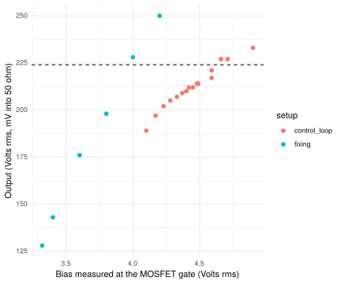

Design and build
I came across a circuit online which seems to promise a no-tune calibrator. It is known as the
dl7av calibrator, Hans Summers built one in a youtube video. I attempted
a modification to 10MHz, this is the version that I originally built [mistakes and all]:
The plan is that the Q1 won’t amplify unless there is positive bias at the gate,
and this is controlled by the op-amp. Following Q1, there is a low pass filter (calculated
using rf-tools calculator). This is rectified, and the op-amp
compares the peak of this filtered signal with the 5V reference (U1). If the rectified
signal is smaller than 5V, U2 increases the bias at Q1’s gate, until there is 5V before the
attenuator. The control-loop should be low impedance, I add a 50 ohm resistor. 5V peak
into 50 ohms is \[(5V/\sqrt{2})^2/50\Omega=0.25W = 10\log_{10}(250mW/1mW)\mathrm{dBm})= 23.97 \mathrm{dBm}.\]
The schematic shows exact values for a 23.97 dB attenuator, but commercial values (390 and 56 Ohm) are close
enough at 24.1 dB.
There are some assumptions about the op-amp not loading down the rectified RF (so that we are measuring
true peaks). The original circuit used a LF356, which is rail-to-rail, the TL072 is definitely not (but
I bought a lot of these on ebay a while back). I didn’t plan on battery operation, so I set
a 12V supply. This is what the first build looked like:
Testing
I set an initial current limitation on my bench PSU, and found that the current went skyward - this
circuit is happy to consume more than an amp, and then the MOSFET is too hot too touch, but with the
limited current. After some fiddling with parts, looking for short circuits, and replacing the RF choke
(which might have been too puny in the original build, the replacement was 25 turns on FT50-43). The point
of this choke is to provide a high resistance to RF – such that RF would rather enter the low pass
filter than the power supply.
For input signal, I tried both my Colpitts oscillator from previous post, but settled on something
similar to what Hans Summers used: 5V square wave from my Rigol function generator.
Still, the experience was: Too much current, voltage taken down to just over 7.1V at 100 mA. At that point,
the rectified DC at the op-amp was short of the voltage reference, the op-amp was probably 5.5V (about
max of what we can expect), and bias at the Q1 gate was 4.24V. Disappointing! But I was measuring about 200 mV
rms on the output (terminated with 50 Ohm), which is in the neighborhood of the 225 mV of 0dBm. So the
circuit was burning hot, in a bias-restricted equilibrium because Q1 pulled enough current to restrict the
power supply of U2 - and then this eventually reduced the max bias voltage reachable.
Trying to figure out what was wrong, I connected the second channel of my PSU to the midpoint of R2 and R3
and adjusted until I had 223 mV at the output. I found that I could reach this with a bias at 3.867V, at which
point the current from the supply was about 55 mA. So a higher bias led to less output.
Trying to fix the unstable bias
That a higher bias eventually lead to lower output is perhaps not so strange - with sufficiently high bias, the
signal is not able to modulate the drain, because Q1 is always on. So there should be two bias points that both
provide 0dBm out - but the higher bias point is not stable; a small increase in bias at this point can lead
to lower rectified output, and this the op-amp would resolve by increasing bias leading to a full-on Q1.
The question is what the op-amp will do on startup. At first there is no bias, so no RF to be rectified, and
the op-amp will try to drive the gate hard. If it drives the gate too hard, it will get past the unstable high-bias
equilibrium, and will go into current limitation. It seems it is necessary to adjust the bias circuit in some way,
but at the same time this bias circuit is at the core of the design. How did it work for others? Were they luckier
about the window of regulation?
One possibility is to restrict the initial bias possible by installing a large electrolytic capacitor to
ground between R2 and R3. Now the op-amp can only slowly increase the bias at the gate og Q1. Ideally, this would
stop the turn-on bias spike from pushing Q1 into the unstable region. I try a 220uF cap. It slows down the increase
in bias voltage at turn-on, but it eventually reaches the same level.
More measurement
This graph shows the relationship between bias and output power, for some measurements implementing
different biases by limiting current to the circuit and leaving the control loop to set the bias,
and some in which I cut the 5V reference to the op-amp and set the bias by adding a psu channel
to the midpoint of R2 and R3.

The dashed line represent the target of 224mV (rms) into 50 ohm, 0dBm.
Note that all the “control-loop” measurements are in heavy current limitation (lowest bias with the control loop measurements are
found with 50mA and a power supply voltage of 6.9V, the highest with 400mA at 8.15V; all the fixed bias settings are at 12V, with currents
ranging from 16mA to 86mA).
The rectification circuit
So it is eminently feasible for the amplifier to reach its target before the bias/gain relationship begins to flatten out.
But we don’t, and even the slow turn-on doesn’t help in this. The next place to turn our attention seem to be the rectification
of RF and comparison with the reference level of 5V (minus diode drops of the Schottky diodes, BAT42).
We can ask how much we actually measure at the input of the op-amp in terms of voltage. This should obviously be
a high impedance measurement, since the rectification is only half-wave.
I do some more measurements:
- In the closed loop setting at 225 mA (which provided about 242mV): 1.94V
- In the open loop with the 5V reference removed and controlled bias at 4V (which also provided about 0dBm): 1.8V.
- In the open loop with the 5V reference removed - and I also cut the connection between the cathode of D2 and the op-amp,
such that it is just the bleed-off resistor of 3M3 and the oscilloscope probe that loads the rectifier: 1.8V.
- I have 3.96 Vpp at C8.
Something is not right - Is my attenuator wrong? Or is it my scope settings? I have terminated the reference out in
a physical 50 Ohm feed through terminator. But (argh!), I have also checked the 50 ohm setting in the scope, which should
effectively have put a 25 Ohm load on the circuit? I remove the extra 50 ohm load in the scope, and now I have 353 mV rms at
the output, this is 4 still 3.9 V at C8. Is my attenuator wrong? I used a random
online calculator. Let’s try on my own.
Attenuation
I have a pi attenuator with 50 ohm in and out. Following the EMIRFD formulas,
RP <- function(R, V) {
R * (1+V)/(1-V)
}
RS <- function(R,V) {
2*R^2*RP(R,V) / (RP(R,V)^2 - R^2)
}
(RP(50, sqrt(0.1)/5))
## [1] 56.75156
(RS(50, sqrt(0.1)/5))
## [1] 393.7036
These are the opposite of the leg/bar of the \(\pi\) attenuator. Irritating, but easy to fix. I solder in
new components. Now it is clear that the circuit cannot provide the necessary amplification to reach 5V
peak at the point of rectification. But why are we aiming so high? Couldn’t we use a different voltage reference
and a different attenuator? What if we replace the 78L05 with a LM385, providing a nominal 1.235V? Let’s put
it in series with a 10k resistor, so there is approximately 1 mA flowing through it. Should be sufficient
to provide a reference without too much voltage drop in the Schottky diode.
New attenuators: Now we need to attenuate with respect to 1.235V instead of 5:
(RP(50, sqrt(0.1)/1.235))
## [1] 84.41852
(RS(50, sqrt(0.1)/1.235))
## [1] 91.23395
This is sufficiently close to 82 and 91 ohms, which I have available. I solder in the
new values and measure output Vpp vs input Vpp. In the range [1.5,5] I find that I get
334 mVpp, and that the two legs of the op-amp sit at the same voltage (just above 1V). That
is, I think, half of what we aimed at? But of course this is because the attenuation I’ve calculated is for
the attenuator side of R4, not the filter side (which is where we’ve got the
1.235 Vp)! With correct matching, we should have half of the reference voltage on the attenuator
side of R4, so we should have the attenuator values
(RP(50, sqrt(0.1)/(0.5*1.235)))
## [1] 154.9641
(RS(50, sqrt(0.1)/(0.5*1.235)))
## [1] 36.01492
This is sufficiently close to 150 and 36 which I have on hand (0.1dB off in attenuation, return loss
43 dB). I solder in the new parts and measure 700mV pp, 247 mV rms, which is 247.5
mV rms, or 0.881 dBm. So a bit off,
but taking into account the tolerances and such, being less than a dB off I think is not so bad, a bit of trimming
in the final build should be able to sort that out. This is the final schematic of today’s test:
 Considering my silly mistake of requiring too much gain because used the wrong reference point to calculate the attenuation,
I might have been able to save the original 5V plans, with the LM385 reference, we are close to where the absolute tolerances
are. We can get some help with matched diodes (MBD330 is two Schottky diodes in a SOT-363 package for just a few kr / piece).
I can make room for parallel resistors for each of the attenuator resistors.
Considering my silly mistake of requiring too much gain because used the wrong reference point to calculate the attenuation,
I might have been able to save the original 5V plans, with the LM385 reference, we are close to where the absolute tolerances
are. We can get some help with matched diodes (MBD330 is two Schottky diodes in a SOT-363 package for just a few kr / piece).
I can make room for parallel resistors for each of the attenuator resistors.
Unfortunately, the drive of the Colpitts oscillator I’ve prototyped is not sufficient to drive the
levelling circuit. I would need a solid gain-block in between - perhaps a common emitter block with
a voltage gain of 5-6 before the final emitter follower.